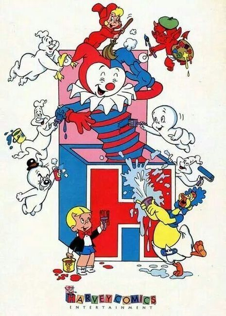

Harvey Comics (also known as Harvey World Famous Comics, Harvey Publications, Harvey Comics Entertainment, Harvey Hits, Harvey Illustrated Humor, and Harvey Picture Magazines) was an American comic book publisher, founded in New York City by Alfred Harvey in 1941, after buying out the small publisher Brookwood Publications. His brothers, Robert B. and Leon Harvey, joined shortly after. The company soon got into licensed characters, which by the 1950s, became the bulk of their output. The artist Warren Kremer is closely associated with the publisher.
Harvey's signature mascot is "Joker", a harlequin jack-in-the-box character.
Harvey Comics was founded by the Harvey brothers; Alfred, Leon and Robert, in the 1940s after first acquiring an existing - faltering - title from Brookwood Publications; Speed Comics. The title's headliners were Shock Gibson and Captain Freedom, a patriotic hero like The Shield. Harvey added more anthologies, including Champion Comics and Pocket Comics. From the new titles only one would stay around for a while: The Black Cat, a Hollywood starlet-superhero, which was published into the 1950s.
Harvey began a shift to licensed characters when in 1942 took over as the radio hero Green Hornet's publisher from Holyoke after six issues. Harvey added additional titles such that most of their titles were licensed. Licensed characters included Joe Palooka, Blondie, Dick Tracy, and other newspaper strip characters.
The company ultimately became best known for characters it published in comics from 1950s onward, particularly those it licensed from the animation company Famous Studios, a unit of Paramount Pictures, starting in 1951. These include Little Audrey, Casper the Friendly Ghost, Baby Huey, and Herman and Katnip. Harvey also licensed popular characters from newspaper comic strips, such as Mutt and Jeff and Sad Sack. In addition, Harvey developed such original properties as Richie Rich, Little Dot and Little Lotta.
While the company tried to diversify the comics it published, with brief forays in the 1950s and 1960s into superhero, suspense, horror, western and other forms in such imprints as Harvey Thriller and Thrill Adventure, children's comics were the bulk of its output.
On July 27, 1958, Harvey purchased the October 1950–December 1967 Famous Studio cartoons (including character rights and rights to the cartoon shorts, but excluding Popeye). The Famous cartoons were repackaged and distributed to television as Harveytoons, and Harvey continued production on new comics and a handful of new cartoons produced for television. Casper the Friendly Ghost, who had been Famous' most popular original character, now became Harvey's top draw. Associated characters such as Spooky the Tuff Little Ghost, The Ghostly Trio, Casper's horse Nightmare, Hot Stuff the Little Devil, and Wendy the Good Little Witch were added to the Harvey line.
Titles
Alvin and the Chipmunks
Baby Huey
Baby Huey and Papa
Baby Huey Duckland
Baby Huey, the Baby Giant
Back to the Future
Beethoven
Beetlejuice
Beetlejuice: Crimebusters on the Haunt
Beetlejuice Holiday Special
Beetlejuice in the Neitherworld
Black Cat Comics
Black Cat Mystery
Blondie
Bunny
Captain 3-D
Captain Flower
Captain Freedom
Casper and Friends
Casper and Nightmare
Casper and Spooky
Casper and The Ghostly Trio
Casper and Wendy
Casper In Space
Casper Spaceship
Casper the Friendly Ghost
Casper TV Showtime
Casper's Ghostland
Chamber of Chills
Clown Comics
Devil Kids Starring Hot Stuff
Felix the Cat
First Love Illustrated (1949–1963)
Fighting American
Flash Gordon
Flat-Top
The Flintstones
The Flintstones Doublevision: 1 issue (Sept. 1994)
Fruitman
The Green Hornet
Harvey Collectors Comics
Harvey Comics Hits
Harvey Hits
Harvey Hits Comics
Herman and Katnip
Hot Stuff
Hot Stuff Creepy Caves
Hot Stuff Sizzlers
Hot Stuff the Little Devil
Invisible Scarlet O'Neil
Jackie Jokers
The Jetsons
Jigsaw
Joe Palooka
Kerry Drake
Little Audrey
Little Audrey and Melvin
Little Dot
Little Dot's Uncles & Aunts
Little Dracula
Little Lotta
Little Lotta in Foodland
Man in Black
Mazie
Monster in My Pocket
Muppet Babies
Mutt and Jeff
Pebbles and Bamm Bamm
Phantom
Pink Panther
Popeye
Rags Rabbit
Richie Rich
Richie Rich Adventure Digest
Richie Rich and...
Richie Rich and Billy Bellhops
Richie Rich and Cadbury
Richie Rich and Casper
Richie Rich and Dollar The Dog
Richie Rich and Dot
Richie Rich and Gloria
Richie Rich and His Girlfriends
Richie Rich and His Mean Cousin Reggie
Richie Rich and Jackie Jokers
Richie Rich and New Kids on the Block
Richie Rich and Professor Keenbean
Richie Rich Bank Books
Richie Rich Best of the Years Digest
Richie Rich Big Book
Richie Rich Big Bucks
Richie Rich Billions
Richie Rich Cash
Richie Rich Cash Money
Richie Rich Casper and Wendy National League
Richie Rich Diamonds
Richie Rich Digest
Richie Rich Digest Stories
Richie Rich Digest Winners
Richie Rich Dollars and Cents
Richie Rich Fortunes
Richie Rich Gems
Richie Rich Giant Size
Richie Rich Gold and Silver
Richie Rich Gold Nuggets Digest
Richie Rich Holiday Digest
Richie Rich Inventions
Richie Rich Jackpots
Richie Rich Meets Timmy Time
Richie Rich Million Dollar Digest
Richie Rich Millions
Richie Rich Money World
Richie Rich Money World Digest
Richie Rich Profits
Richie Rich Relics
Richie Rich Riches
Richie Rich Success Stories
Richie Rich Summer Bonanza
Richie Rich Treasure Chest Digest
Richie Rich Vacation Digest
Richie Rich Vacations Digest
Richie Rich Vault of Mystery
Richie Rich Zillionz
Sad Sack and the Sarge
Sad Sack Comics
Sad Sack Laugh Special
Sad Sack's Army Life
Sad Sack's Funny Friends
Sad Sad Sack World
Scooby-Doo
Speed Comics: 44 issues (Oct. 1939 – Jan./Feb. 1947)
The Spirit
Spitfire (Mahon)
Spooky Haunted House
Spooky Spooktown
Spooky the Tuff Little Ghost
Spyman
Stone Protectors
Stretch
Stunt Dawgs
Stuntman Comics
Super Richie
Thrill-O-Rama
Tom and Jerry
TV Casper and Company
Ultraman
Underdog
Unearthly Spectaculars
Wendy and the New Kids On The Block
Wendy the Good Little Witch
Wendy Witch World
Woody Woodpecker
Yogi Bear